Series 01 · Ten issues · MMXXVIA catalogue of stampsNo. 0001
The Long Postmail for a later world.
ARumour
BPieces
CUndergrowth
DElsewhere
ETide
FDistance
GSomeday
HOrbits
IUntil
JFirst flight
PAR AVIONBY LATER MAIL
The Long Post
Bureau of later mail
est. 2026
est. 2026
€1.20
Culture
beyond
time
beyond
time
48.8606° N
2.3376° EArt
History
People
Later
2.3376° EArt
History
People
Later
Object
connects
worlds
Every star
was once
a rumour.
Cat. no.
Artist
Title
Date
Medium
Size
Artist
Title
Date
Medium
Size
LP 2026.002
Johannes Vermeer
The Astronomer
c. 1668
Oil on canvas
51 × 45 cm
Johannes Vermeer
The Astronomer
c. 1668
Oil on canvas
51 × 45 cm
Collections
for what's
next
for what's
next
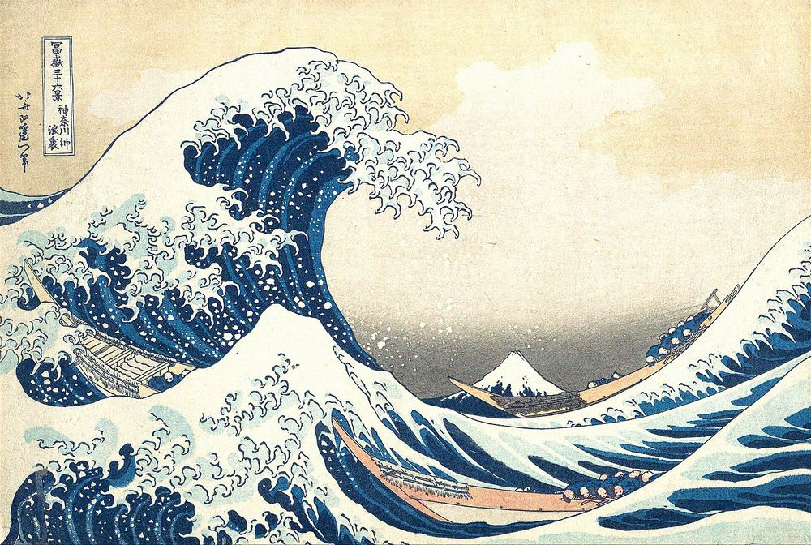
70¢
World
post
post
Patience
is a kind
of tide.
Carriers
of a later
worldEst. 2026
of a later
worldEst. 2026
1831People
water
waiting
water
waiting
Small
boats
large
waves
boats
large
waves
SEEN
IN
PIECES.
A face
is a sum
of glances.
is a sum
of glances.
0.90
Postes
à venir
à venir
Art
People
Places
Glances
Later
People
Places
Glances
Later
20
26
26
The Long
Post Society52.0804° N
4.3143° E
Post Society52.0804° N
4.3143° E
Small parts
whole peopleNo. 066501
whole peopleNo. 066501
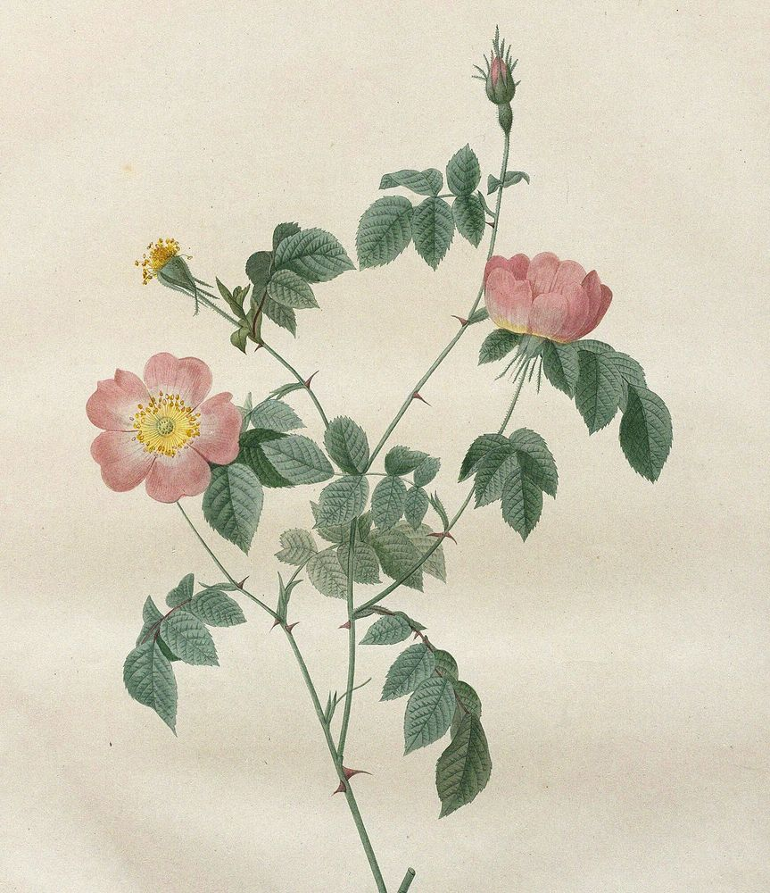
08
Cents
Wilder
things
keep
time
things
keep
time
Slow Growth— is still growth
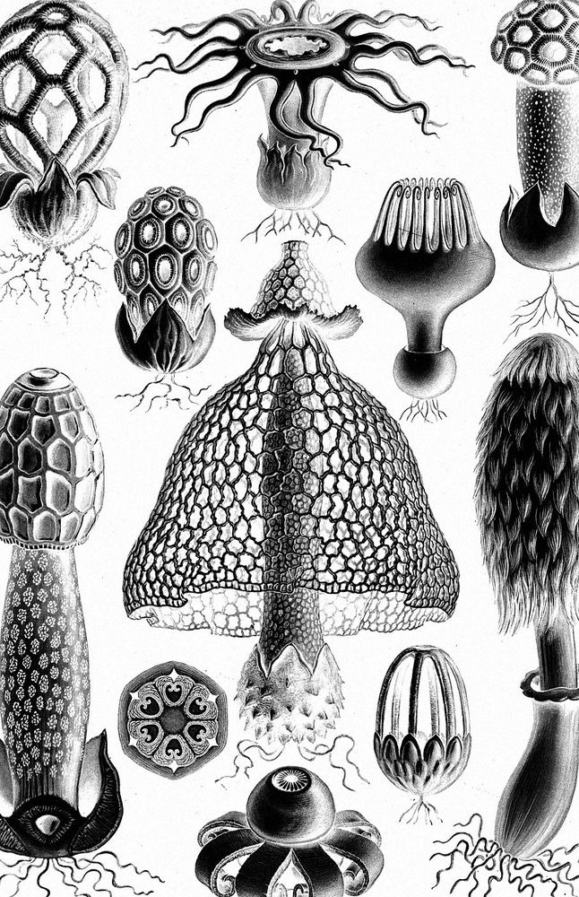
12
Cents
The Undergrowthholds the forest up
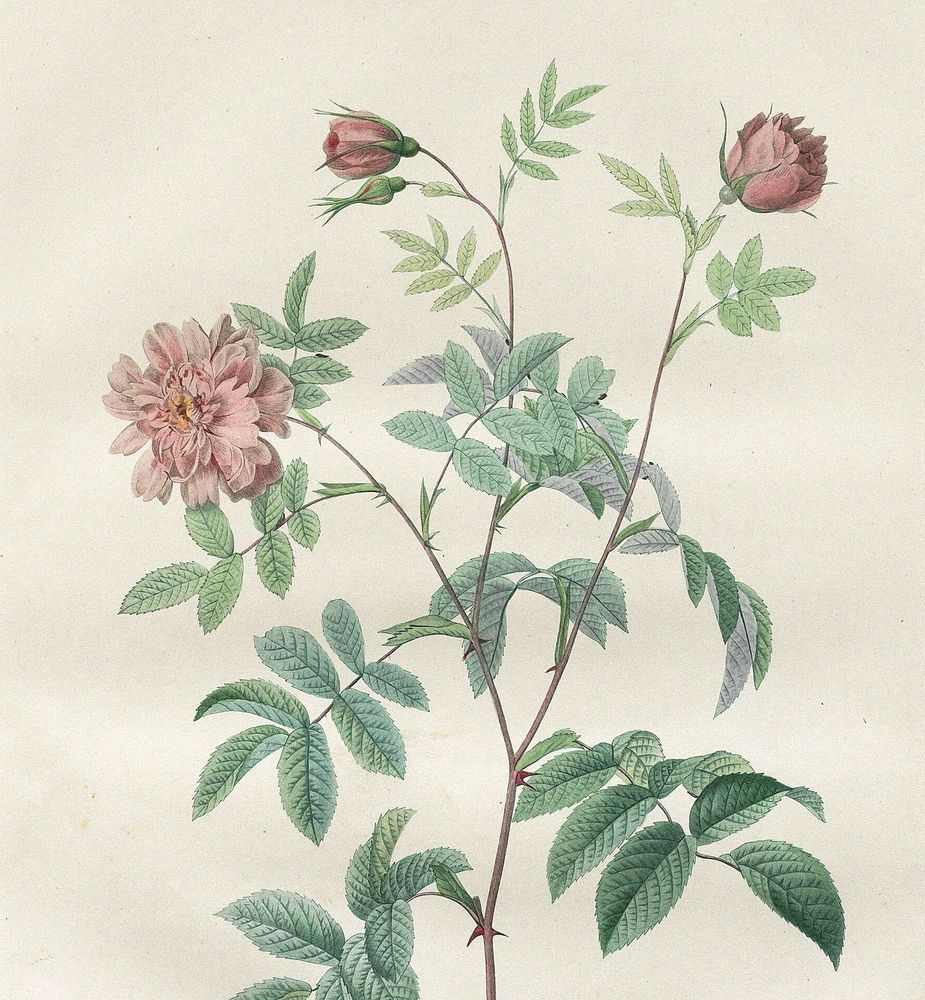
20
Cents
Slower
days
softer
things
days
softer
things
After
the long
winter.
the long
winter.
Second Bloomarrives late, arrives
LATER POST
A patient
human
tomorrow
human
tomorrow
People
planet
patience
est. 2026
planet
patience
est. 2026
60¢
UNTIL
Waiting is a map
to later.”
to later.”
Same
people
longer
horizons
people
longer
horizons
24
10
26
10
26
№ 0026
Global
later
series
001
later
series
001
A patient
human
future
human
future
For
what
comes
next
what
comes
next
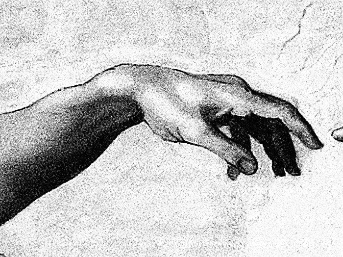
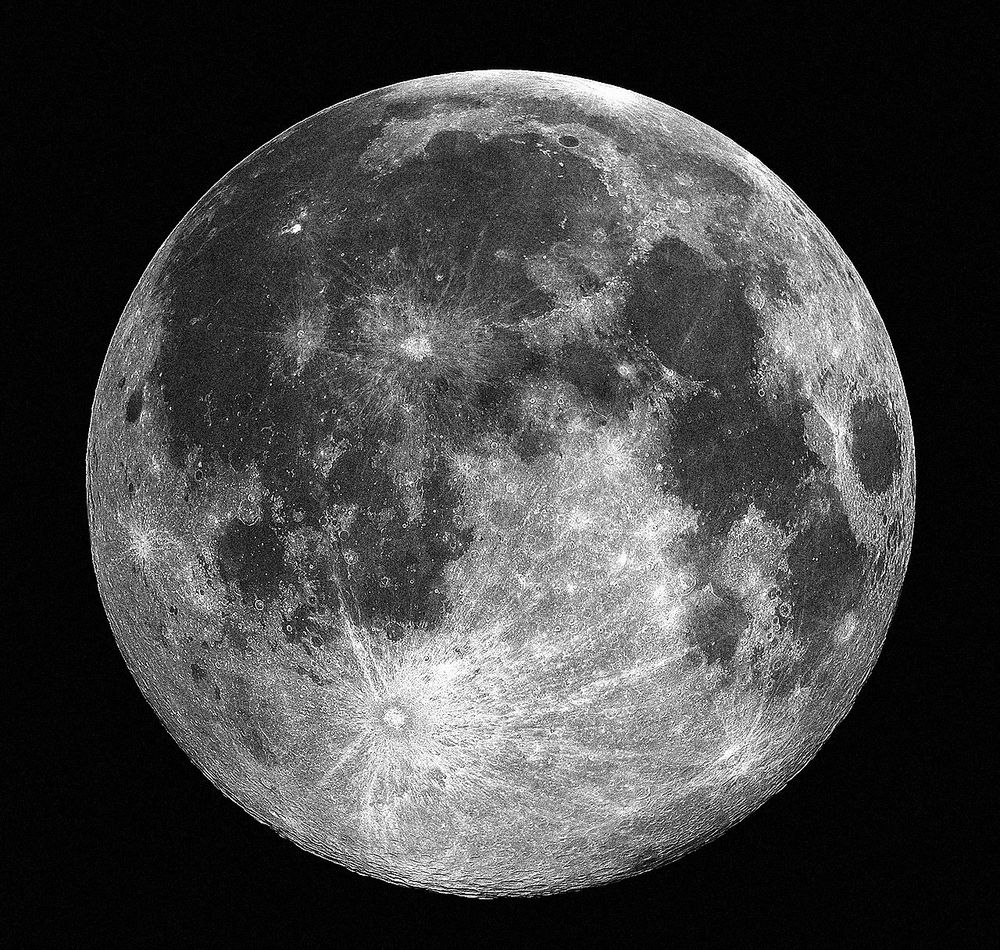
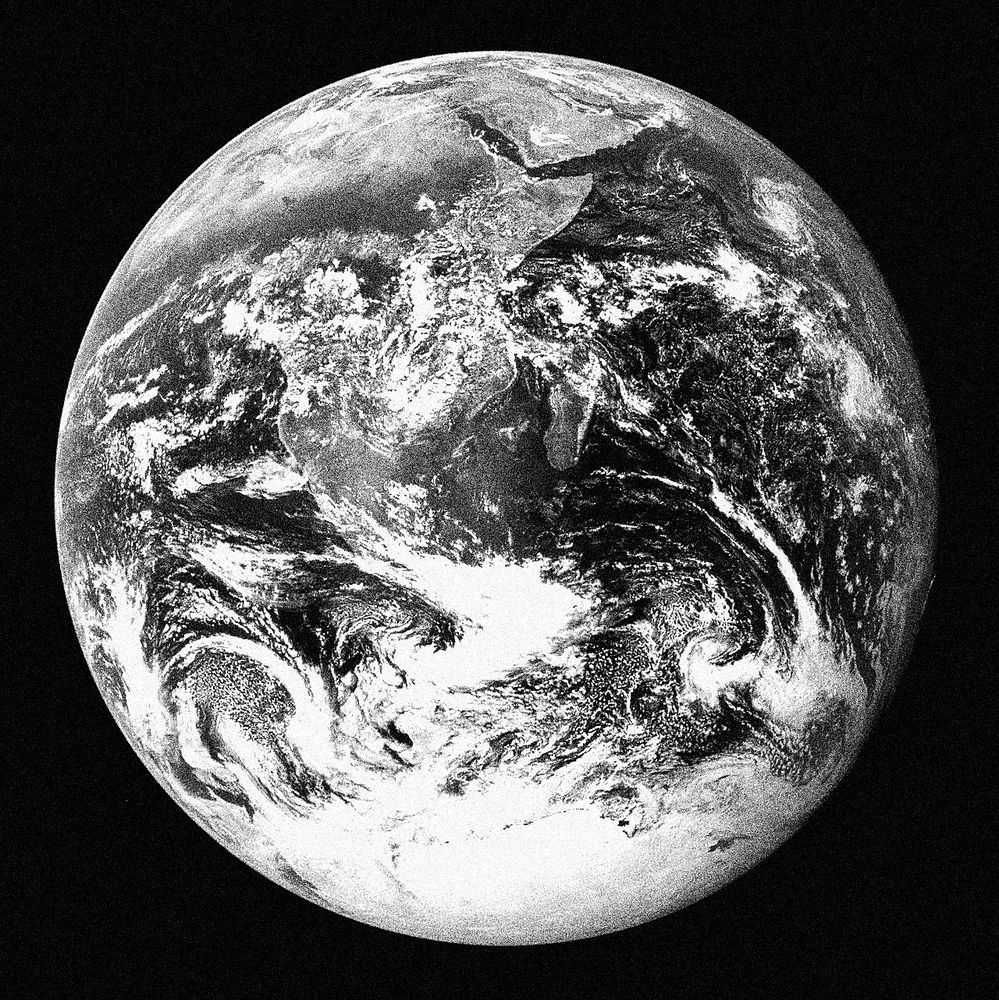
01
Touch—
Touch—
02
Pull—
Pull—
03
Face—
Face—
04
Home—
Home—
Every orbit
is a promise
kept.
is a promise
kept.
60¢
Later post
Archive
planet
people
objects
ideas
later
planet
people
objects
ideas
later
Cat. no.
LP-2026-H
LP-2026-H
RBITS
The Long Post
A global later-mail initiativeSeries 01
of 04Est.
2026
A global later-mail initiativeSeries 01
of 04Est.
2026
Letters
outlive
distance.
手紙は
距離より
長く生きる
距離より
長く生きる
Visual
correspondence
in motion.
correspondence
in motion.
Paper
ink
motion
distance
systems
ink
motion
distance
systems
20
26
—
∞
26
—
∞
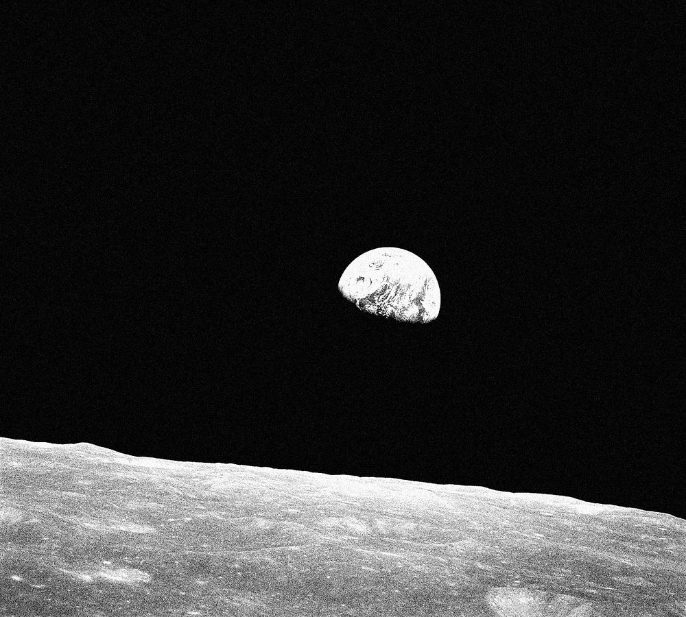
The Long Post遠くへ届く
THE LONG
POST
POST
Visual
letters
in motion.
letters
in motion.
地球
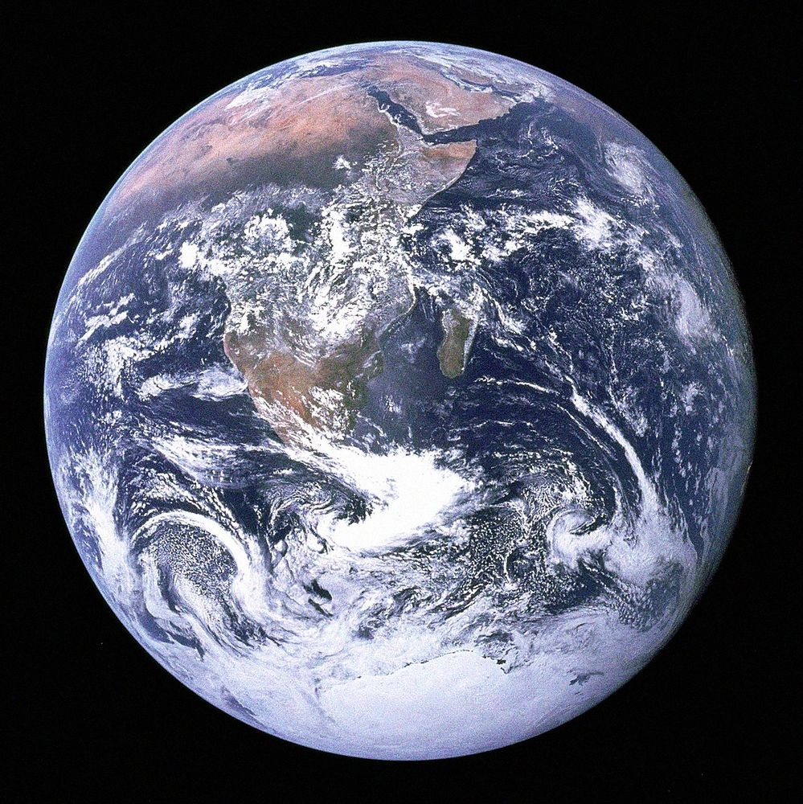
35.6762° N 139.6503° E
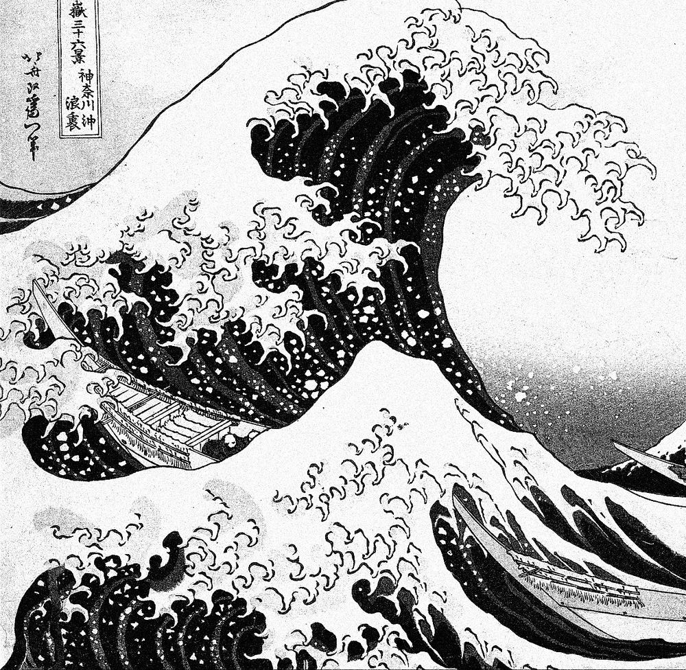
流れる・届く・残る
Letters become weather.
郵
Brand · paper · places · systems
Later Archive™
A small mark for
a longer tomorrow
A small mark for
a longer tomorrow
Issue no.
007 ↘
007 ↘
People
rivers
ideas
still here
rivers
ideas
still here
A letter
in transit
in transit
2026
Worldwide
postal use026 007 2026
Worldwide
postal use026 007 2026
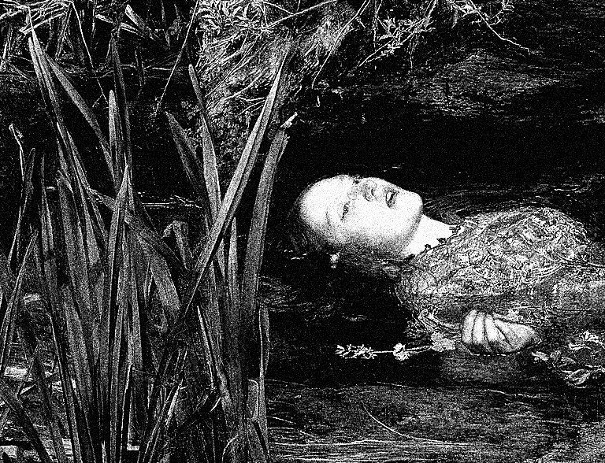
いつか、
きっと、
どこかで。
きっと、
どこかで。
Someday, surely,
somewhere.
somewhere.
Same river.
Different
water.
Different
water.
サムデイ
someday
AArchive edition
for a longer tomorrow
general releaseLV.007
limited
series
for a longer tomorrow
general releaseLV.007
limited
series
Scan for
more laters.→
more laters.→
Same river.
A longer hourglass.
A longer hourglass.
A collection of letters, rivers and loose ends from a world still in progress. Not an ending. A postponement.
RRestricted
for patient minds. contains
water, waiting and hope
for patient minds. contains
water, waiting and hope
♻////Fragile future
handle with care
handle with care
POSTAL VALUE140 ↗
ELSEWHERE
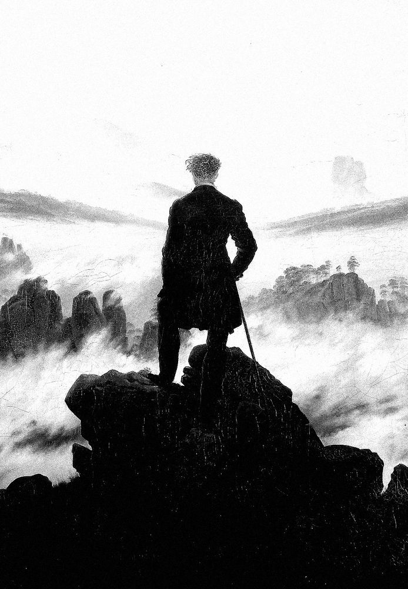
Fog
One person
Doubt
Everything else
“EVERYWHERE IS ELSEWHERE TO SOMEONE.”
Look // leave // return // remember
the view changes the viewer.
nothing is far from everywhere.
the view changes the viewer.
nothing is far from everywhere.
People
places
views
distances
places
views
distances
80¢
World post
60¢
LATER
POSTAGE
POSTAGE
Every
distance
begins small.
distance
begins small.
People
places
distance
further
places
distance
further
Twelve
seconds
one hundred
twenty feet
seconds
one hundred
twenty feet
Signal
memory
nerve
beyond
memory
nerve
beyond
No. 1217-1903
First flight series
First flight series
19
03
—
20
26
03
—
20
26
Small hours
large skies
large skies
Colophon
& credits
Images from public-domain works:
Vermeer · Friedrich · Michelangelo · Botticelli · Millais · Hokusai · Redouté · Haeckel · the Wright brothers · NASA Apollo 8 & 17.
Set in Instrument Serif, Inter Tight, Anton, Archivo, IBM Plex Mono & Noto JP.
Vermeer · Friedrich · Michelangelo · Botticelli · Millais · Hokusai · Redouté · Haeckel · the Wright brothers · NASA Apollo 8 & 17.
Set in Instrument Serif, Inter Tight, Anton, Archivo, IBM Plex Mono & Noto JP.
Click any stamp to hold it up to the light. ← → to leaf through, esc to put it back.